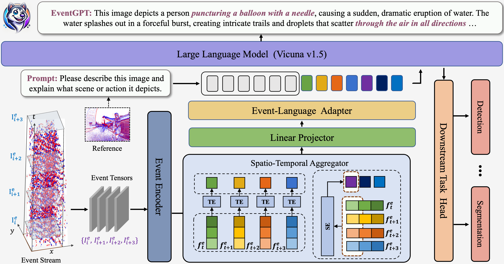
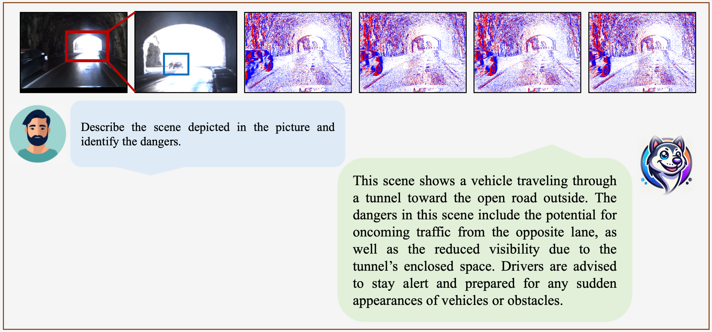
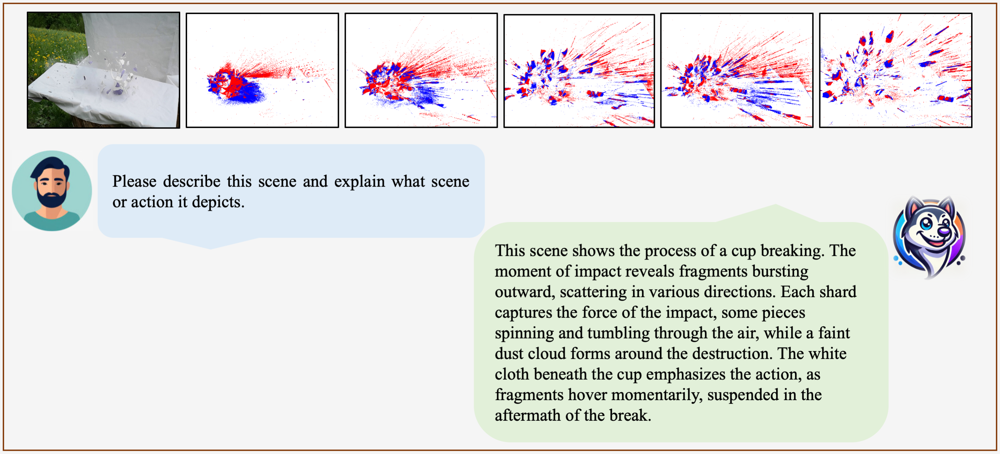
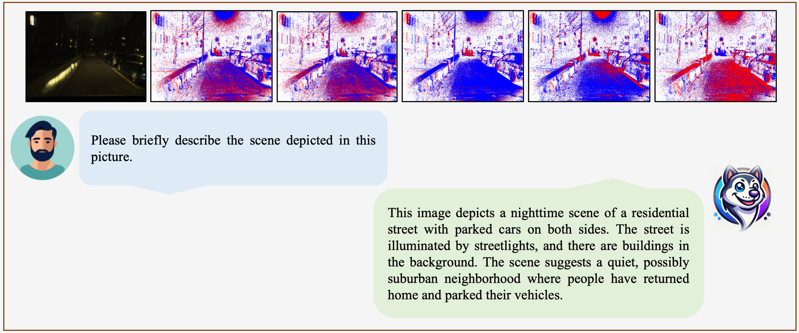
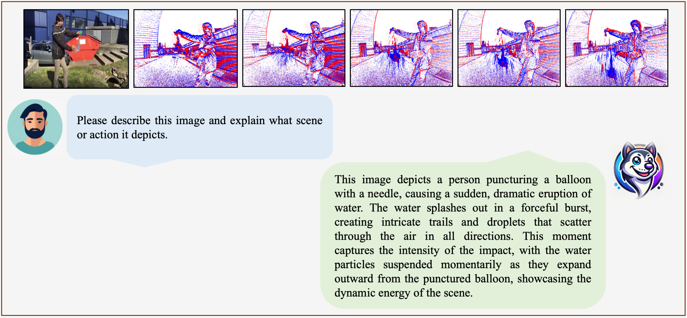
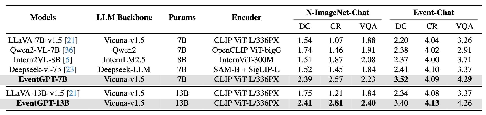

Event cameras record visual information as asynchronous pixel change streams, excelling at scene perception under unsatisfactory lighting or high-dynamic conditions. Existing multimodal large language models (MLLMs) concentrate on natural RGB images, failing in scenarios where event data fits better. In this paper, we introduce EventGPT, the first MLLM for event stream understanding, to the best of our knowledge, marking a pioneering attempt to integrate large language models (LLMs) with event stream comprehension. To mitigate the huge domain gaps, we develop a three-stage optimization paradigm to gradually equip a pre-trained LLM with the capability of understanding event-based scenes. Our EventGPT comprises an event encoder, followed by a spatio-temporal aggregator, a linear projector, an event-language adapter, and an LLM. Firstly, RGB image-text pairs generated by GPT are leveraged to warm up the linear projector, referring to LLaVA, as the gap between natural image and language modalities is relatively smaller. Secondly, we construct a synthetic yet large dataset, N-ImageNet-Chat, consisting of event frames and corresponding texts to enable the use of the spatio-temporal aggregator and to train the event-language adapter, thereby aligning event features more closely with the language space. Finally, we gather an instruction dataset, Event-Chat, which contains extensive real-world data to fine-tune the entire model, further enhancing its generalization ability. We construct a comprehensive benchmark, and experiments show that EventGPT surpasses previous state-of-the-art MLLMs in generation quality, descriptive accuracy, and reasoning capability.
Overview of our framework. The event encoder transforms raw event tensors into high-dimensional features, which are then aggregated by a spatio-temporal module. These representations are projected and aligned with the large language model, enabling nuanced understanding of event streams and supporting various downstream applications.

We employ a three-stage training framework. In the first stage, the Linear Projector is trained using the LLaVA-Pretrain dataset to establish fundamental image-language alignment. In the second stage, the Event-Language Adapter is trained on N-ImageNet-Chat, a dataset we constructed, to align event representations with the language space, thereby enabling the model to acquire essential multimodal contextual understanding for event streams. In the final stage, the model is fine-tuned with Event-Chat, a high-quality instruction-supervised dataset we created, achieving enhanced instruction-following capabilities specifically designed for event stream data.
   

@article{liu2024eventgpt,
title={EventGPT: Event Stream Understanding with Multimodal Large Language Models},
author={Shaoyu Liu, Jianing Li, Guanghui Zhao, Yunjian Zhang, Xin Meng, Fei Richard Yu, Xiangyang Ji, Ming Li},
journal={arXiv preprint arXiv:},
year={2024}
}